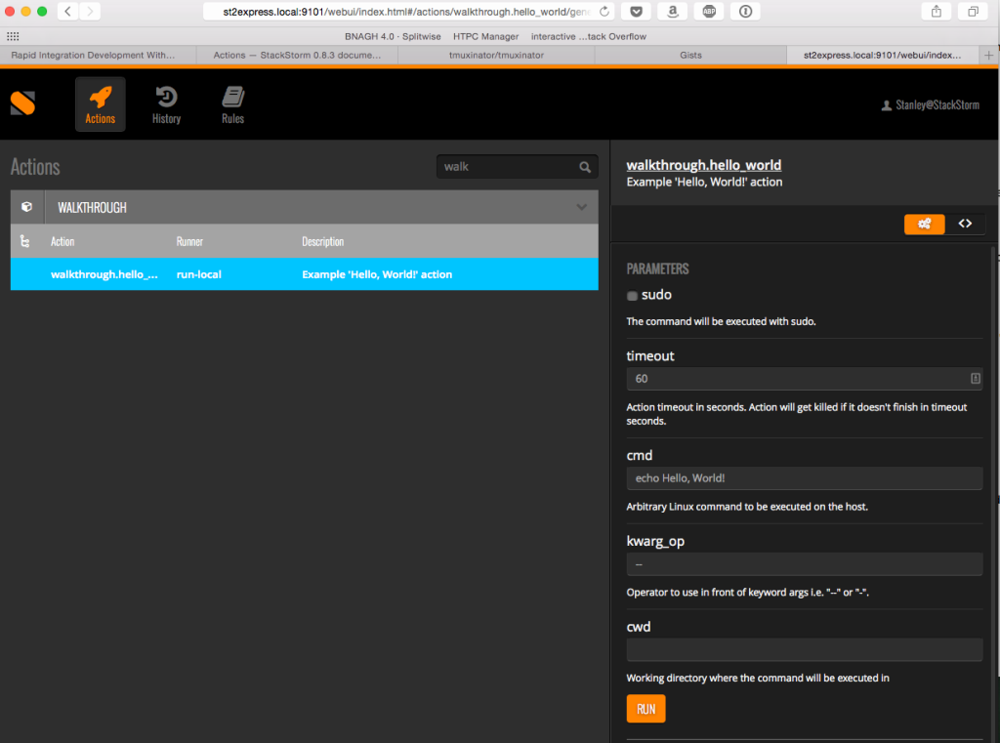

April 20, 2015
by James Fryman
In order to unleash the true power of StackStorm, a good first step is to learn about actions. Actions are the cornerstone of the StackStorm system, representing what we commonly refer to as ‘lego bricks’. Actions are what StackStorm ties together to compose complex workflows to drive even the most complex cases.
Today, we will explore actions within StackStorm. By the end of this article, you’ll have a great understanding of how…
Ready to start your automation journey? Buckle up, and let’s dive in!
NOTE: Check out our up-to-date documentation for Actions that can always be found on our docs site.
Maybe this is the first time you’re hearing about StackStorm. No worries, welcome! In a nutshell, StackStorm is IFTTT for IT Operations. It responds to events from tools in your environment via Integrations, and using our Rules Engine, can orchestrate complex workflows. We’ve put together a great getting started overview for your reference.
Before you get started, it’s essential to have a solid development environment to rapidly iterate. The easiest way to get started with writing action integrations is to use our st2workbench development environment. Check out our blog post that will show you all the necessary steps to get a dev environment up and running in minutes.
As with any programming environment, it is traditional to begin with the all-present “Hello, World!” example. We’ll use this simple command to begin our introduction to the first part of an action, the action metadata.
Let’s begin with a completed Action Metadata file, and we’ll break it down in sections.
# walkthrough/actions/hello_world.yaml
---
name: hello_world
runner_type: "run-local"
description: "Example 'Hello, World!' action"
enabled: true
parameters:
cmd:
default: "echo Hello, World!"
A metadata file has several main attributes within to be defined. Each of these sections provides a bit of information to StackStorm in terms of integration to various subsystems. Help is automatically populated based on descriptions provided in this file. The integration method for how StackStorm will execute actions in the form of runners is also defined here.
For now, let’s create this example on your StackStorm installation and watch it work. First, create a your first pack directory, and then navigate to the actions directory of your new pack. Packs are created in the /opt/stackstorm directory.
$ cd /opt/stackstorm/packs
$ sudo mkdir -p walkthrough/{actions,rules,sensors}
$ cd walkthrough/actions
Create a new file named hello_world.yaml with your favorite text editor, and copy the contents of the above example into that file. Once that is done, reload StackStorm to register the new action.
$ sudo st2ctl reload --register-all
NOTE: This step may be unnecessary if you are using the setup instructions in the Rapid Integration blog and are using the built in Guard watcher. Guard should automatically register new actions as they are written to the filesystem.
Now, run your command, and bask in the goodness that is your first action.
$ st2 run walkthrough.hello_world
You should see the result of the action pop up very shortly. Something like this:
id: 553125c09c99384a4eaa6f9b
status: succeeded
result:
{
"failed": false,
"stderr": "",
"return_code": 0,
"succeeded": true,
"stdout": "Hello, World!
"
}
Huzzah! Congrats, you’ve created your first action! Great though, but what happened. Why go through the effort of creating this metadata? We’ll, let’s talk about one of the first benefits of the metadata file, documentation.
Documentation
Some people love documentation, others really hate it. But, the challenge is creating documentation that is both relevant because it is up-to-date and accurate. By leveraging StackStorm and leaning into the “Infrastructure as Code” paradigm, it is possible to greatly reduce the friction associated with documentation management by baking it into the actions being executed, close to the code, and contextually relevant. So, lets access this information.
You can access this via the CLI:
[email protected]:/opt/stackstorm/packs/walkthrough/actions# st2 run walkthrough.hello_world -h
Example 'Hello, World!' action
Optional Parameters:
cmd
Default: echo Hello, World!
cwd
Working directory where the command will be executed in
Type: string
env
Environment variables which will be available to the command(e.g.
key1=val1,key2=val2)
Type: object
kwarg_op
Operator to use in front of keyword args i.e. "--" or "-".
Type: string
Default: --
sudo
The command will be executed with sudo.
Type: boolean
Default: False
timeout
Action timeout in seconds. Action will get killed if it doesn't finish in timeout seconds.
Type: integer
Default: 60
or via the Web UI:

Take note that the actions shown here are much more than we’ve defined in our metadata file. This is because each runner type has some built in attributes that can be set at runtime, or overwritten in the action metadata file. In our first example, the cmd attribute is actually an attribute of the run-local runner.
What is a runner? Well, that’s a good segue, so let’s take it!
Internal to StackStorm, we employ multiple ways to execute different types of actions. An action in StackStorm can be either a single command, or a workflow. Furthermore, actions may be run on the machine that StackStorm workers execute or they may be executed remotely on many servers. In order to account for the various contexts that an action may execute, we provide a pluggable action runner system behind actions. At a very high level, the types of runners that we support include:
Check out the full list of available runners detailing how they are used and the parameters that they take.
Shell Based Runners
Now that we have created a basic action, and walked through some of the description of them, let’s do some real stuff with it and create some examples. A very common scenario is: I have this great automation script, and I want to make it available as an action. Let’s start with wrapping a shell script.
Shell scripts usually come in two flavors usually. Some shell scripts take arguments in a chain after a command. Something like this:
$ ./my_awesome_script ~/filea.txt ~/fileb.txt
In this case, we’re not providing any data about how each parameter is being used. In this case, the order they are supplied to the script matters. We refer this to as ‘positional arguments’, and provide a way to specify which order commands are entered into an application. Here is an action metadata that shows integration with a script like this.
---
name: traceroute
runner_type: run-remote
description: "Traceroute a Host"
enabled: true
entry_point: 'traceroute.sh'
parameters:
host:
type: string
description: host name to traceroute
required: true
position: 1
hops:
type: integer
description: Limit of maximum number of hops
default: 30
position: 2
queries_to_hop:
type: integer
description: No. of queries to each hop
default: 3
position: 3
hosts:
default: "localhost"
In this example traceroute command, take note of the position attribute for each of the parameters. These directly correspond to the position of the argument as it is passed into the shell command to be executed as part of this action. The entry_point specifies where the action should look when it goes to execute a command.
Source: https://github.com/StackStorm/st2/blob/master/contrib/linux/actions/traceroute.yaml
Script: https://github.com/StackStorm/st2/blob/master/contrib/linux/actions/traceroute.sh
What about Ruby?
Shell based runners can also run code in pretty much any language. In this example, I have a small ruby application that uses optparse to take command line input. So, I want to make sure that my metadata file takes the arguments for my Ruby application and passes them through properly. Let’s take a look at the action metadata for this ruby application.
---
name: pack
runner_type: run-remote-script
description: Action to perform pack deployments via Git branch deploys
enabled: true
entry_point: pack.rb
parameters:
pack:
type: string
description: Name of the pack to be deployed
required: true
repo:
type: string
description: Location where to retrieve remote pack from
required: true
subtree:
type: boolean
description: Flag to determine whether pack is nested within a repository, or is stand-alone
branch:
type: string
description: git branch to deploy
default: 'origin/master'
info:
type: boolean
description: Get information about deployed pack
debug:
type: boolean
description: Provide additional debug informat
delete:
type: boolean
description: Delete a pack
force:
type: boolean
description: Force a destructive action
sudo:
default: true
In this example, the position argument is missing. However, the Ruby application takes what we call “named parameters”. This might look on the command line like this:
$ ./deploy.rb --branch test --repo StackStorm/st2
Each of the parameter names as defined in the action metadata directly corresponds with the parameter of the command. For example, the branch parameter will pass through the --branch XXX with the specified argument at runtime.
However, sometimes, shell commands don’t use the double-dash -- identifier to label its parameters. In this case, there is an attribute in the action metadata that you can overwrite, and that is the kwarg_op parameter. For example, if your command takes only a single dash like:
$ ./deploy -branch test -repo StackStorm/st
Simply adjust the kwarg_op attribute in your action metadata like this:
...
parameters:
kwarg_op:
default: "-"
Source: https://github.com/StackStorm/st2incubator/blob/master/packs/deploy/actions/pack.yaml
Ruby File: https://github.com/StackStorm/st2incubator/blob/master/packs/deploy/actions/pack.rb
JSON Passing
One of our favorite things to talk about is how JSON is our common language internal to StackStorm. In the context of Shell runners, this means that if I output JSON to STDOUT via any script, StackStorm will automatically parse that output as an object for use in workflows. Forget about worrying about passing data between different systems… output JSON and we’ll take care of the less.
puts result.to_json makes my day, every day I use it. Write very small and focused scripts in the language you’re most comfortable with, emit JSON, and we’ll take care of all the rest. Magic!
Templating
Action metadata also uses the Jinja templating engine behind it. We’ve been playing with a few patterns, and have come up with some creative ways to wrap existing UNIX commands into StackStorm with relative ease. For example, here is an example wrapping up the apt-get command in a StackStorm action.
---
name: apt_get_install
description: Install a package from APT
runner_type: run-remote
enabled: true
entry_point: ''
parameters:
package:
type: string
description: Name of the package to be installed
required: true
position: 1
version:
type: string
description: Version of the package to be installed
position: 2
sudo:
immutable: true
default: true
env:
default:
DEBIAN_FRONTEND: noninteractive
immutable: true
cmd:
type: string
default: 'apt-get -y install {{package}}{% if version %}={{version}}{% endif %}'
immutable: true
Source: https://github.com/StackStorm/st2incubator/blob/master/packs/debian/actions/apt_get_install.yaml
Using Jinja, it’s possible to do variable interpolation and even conditional logic as shown here.
Python Based Runners
Python based runners are pretty awesome as well! Our entire system is written in Python on the backend, so it’s only natural that we make Python a first-class citizen when it comes to writing actions. Let’s take a look at an easy example action metadata from another one of our packs.
---
name: extract_ips
runner_type: run-python
description: Extract IP addresses from RAX payload
enabled: true
entry_point: 'shell/extract_ips.py'
parameters:
nodes:
type: object
description: RAX Payload from `rackspace.list_vms`
required: true
count:
type: integer
description: Optionally decide to limit the number of IPs to return
At this point, nothing in the action metadata should be out of the ordinary. Instead, lets dive into the Python action itself to show the difference.
from st2actions.runners.pythonrunner import Action
class ExtractIPs(Action):
def run(self, nodes, count):
ips = []
for node in nodes:
ips.append(node['public_ip'][1])
if count:
return ips[0:count]
else:
return ips
What you see here is a very basic Python action. In our action, we import the Action runner, and create a new class with the Action parent class. From here, any of the parameters that are defined in the action metadata are automatically passed as named parameters to the run function. From there, you can run normal python in your action, and return values as you see fit.
Take careful note of the object type specified in this example action metadata. This is a special schema type that allows you to pass in a raw object to the application, avoiding the need to serialize if you leverage a Python runner.
Source: https://github.com/StackStorm/st2incubator/blob/master/packs/autoscale/actions/extract_ips.yaml
Script: https://github.com/StackStorm-Exchange/stackstorm-rackspace/blob/master/actions/create_dns_record.py
Hopefully this is enough to get you started. If you haven’t guessed by now, writing actions is very super easy. We’re working to make a ton of these action integrations available out of the box, so if you wan to browse what you can download and get started with today, or read some code for inspiration, you can check out our pack repositories located at https://exchange.stackstorm.org. We even have articles on how to contribute your code upstream to share with everyone! We’re all stronger together, and we want to make it easy to share infrastructure integrations and patterns.
I hope that you’re able to use your new knowledge to create new action integrations for your use-cases. Going even further, we’d love to have you contribute any new content to our pack repositories. We have even more articles coming to help you get started with StackStorm. We’ll go over things like creating Sensors and Rules, creating your first workflows with ActionChain and Mistral, and other tutorials. Stay tuned!
Until next time!